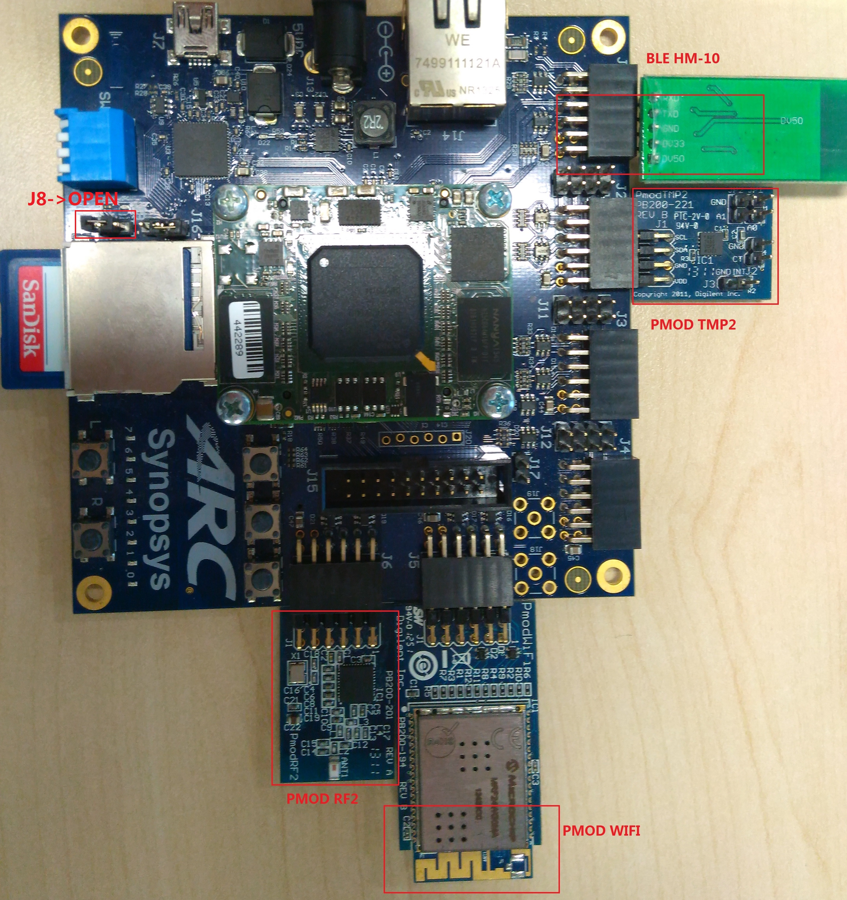
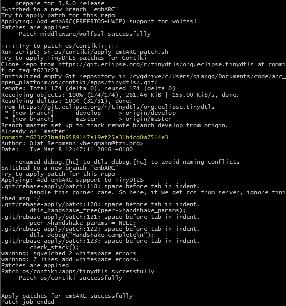
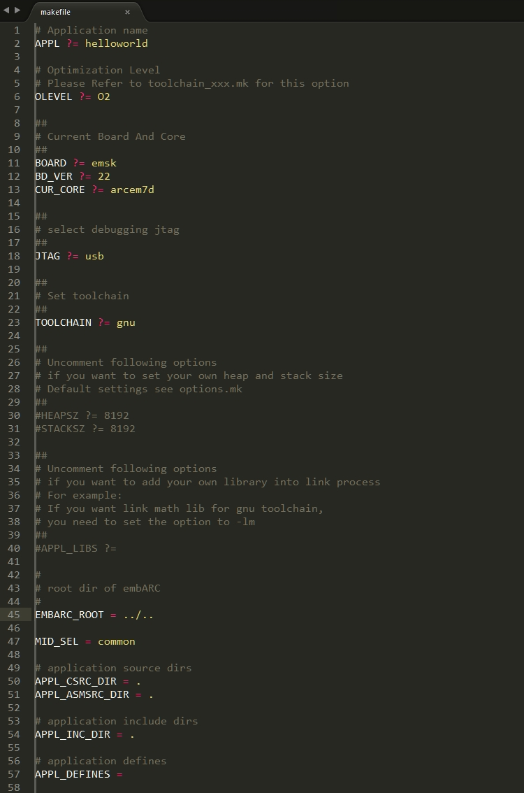
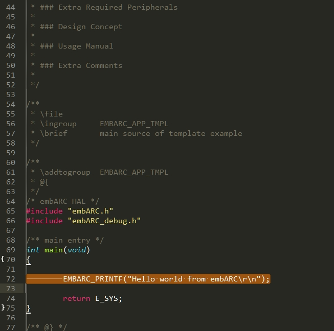
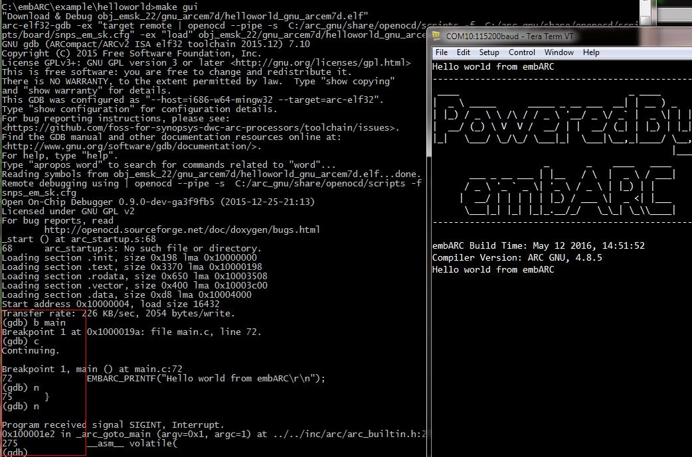
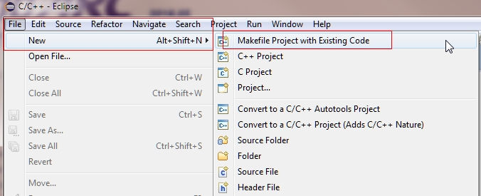
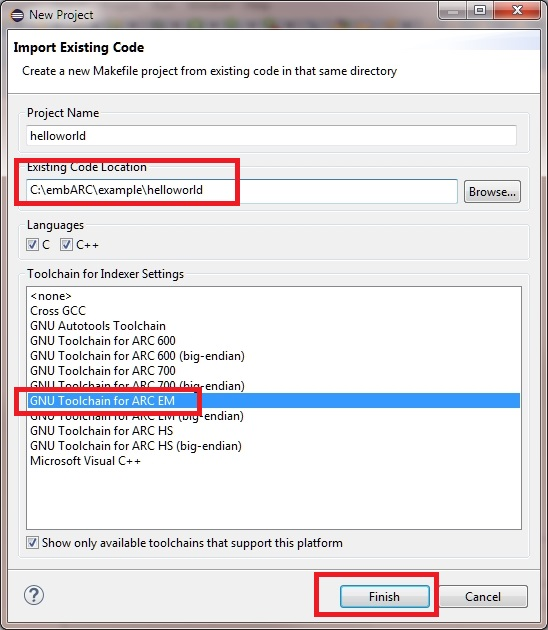
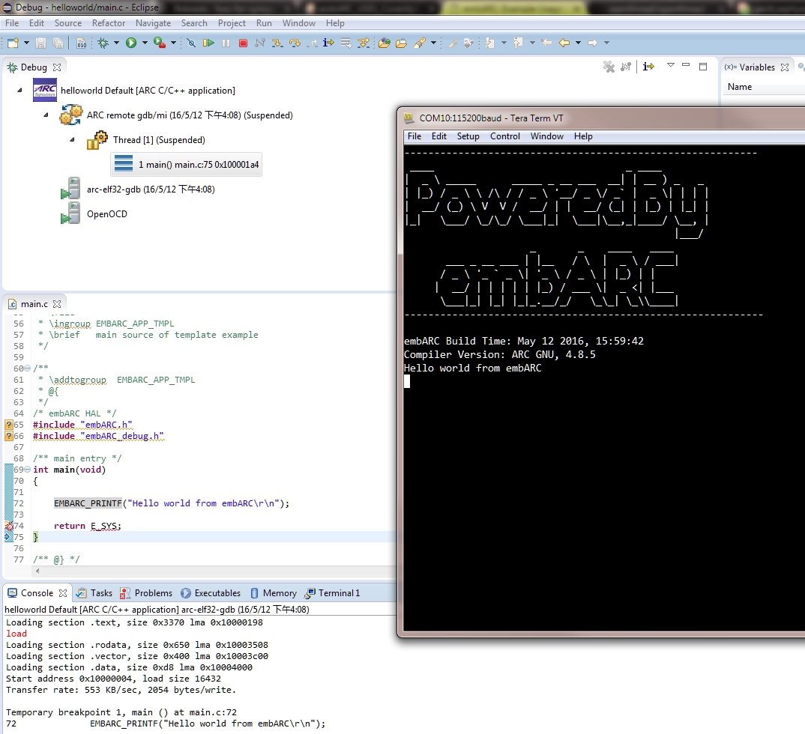

Platform Requirement
Development environment
- Note
- The IDE projects only support Windows 7. Linux is not supported. The command line supports both Windows and Linux.
Software Requirements
- ARC Development Tools, you can choose either one from the following list according to your requirement
- Premium MetaWare Development Toolkit (>=2016.12)
- Opensource ARC GNU IDE(>=2016.09)
- The ARC GNU IDE installer consists of eclipse ide with arc gnu eclipse plugin, arc gnu prebuilt toolchain and openocd for arc.
- Use Zadig to replace FTDI driver with WinUSB driver, see this link for more information
- tcftool is an utility from Metaware toolset, but not included in ARC GNU, in embARC 2017.03, TCF support is added using this tcftool.
- First, you need to request a metaware lite or metaware from this link.
- Then, install the metaware toolset to default location, and find the tcftool from C:/ARC/MetaWare/arc/bin, and copy it to your arc gnu installed bin folder such as C:/arc_gnu/bin.
- Check whether tcftool is in the PATH by run command tcftool in command line.
- Digilent Adept Software - Driver for Digilent JTAG-USB Cable
- Tera Term
- Note
- make/gmake (version 3.81 or later) is provided in the ARC MetaWare and GNU toolsets.
-
We recommend users to install ARC GNU IDE to default location, or else you need to make additional changes as described here.
Hardware Requirements
- ARC EM Starter Kit (EMSK) v1.1, v2.2 or v2.3.
- make BD_VER=11 is for board version v1.1 with CPU frequency 35Mhz for ARCEM4 and ARCEM4CR16, 30Mhz for ARCEM6 and ARCEM6GP.
- make BD_VER=22 is for board version v2.2 with CPU frequency 30Mhz for ARCEM7D, 20Mhz for ARCEM9D and 20Mhz for ARCEM11D.
- make BD_VER=23 is for board version v2.3 with CPU frequency 25Mhz for ARCEM7D, 20Mhz for ARCEM9D and 20Mhz for ARCEM11D.
- The default BD_VER is 22 and the default CUR_CORE is arcem7d for most examples.
- EMSK 2.2 can update to 2.3 by a firmware upgrading
- Some optional peripherals depending on the application's requirement
- Digilent PMOD WiFi with Microchip MRF24WG0MA or RW009 WiFi Module
- Digilent PMOD TMP2
- Digilent PMOD RF2
- BLE HM-10 module
- SSD1306 OLED module
- SD Card, SDHC (8G preferred)
- Wireless router or smart-phone hotspot (Android preferred)
- WiFi supports IEEE 802.11b/g/n and can be connected to the Internet website Xively and AWS IoT.
- Encryption with WPA/WPA2 - AES.
- Note
- The board version(BD_VER) should be confirmed before building an application.
Board Connections and Settings
- WiFi Pmod is connected to the Pmod J5 connector.
- RF2 Pmod is connected to the Pmod J6 connector.
- TMP2 Pmod is connected to the Pmod J2 connector.
- BLE HM-10 is connected to the Pmod J1 connector.
- SSD1306 OLED module is connected to the Pmod J2 or J4 connector depending on your application.
- SD Card plugged into card slot J9.
- Note
- All versions of EMSK have the same board connections. The hardware may be damaged by the wrong connection.

EMSK board Connection Settings
Prepare for Examples
Download Extra Source Code and Apply Required Patches
- Required Tools
- Linux Host: bash, git, dos2unix
- Windows Host: Cygwin, git, dos2unix
- Required Network Environment
- Running scripts to apply patches
- Make sure the <embARC>/apply_embARC_patch.sh file is Unix format. If not, use dos2unix to convert it first.

Errors occur since the apply_embARC_patch.sh is not Unix format
- Run bash <embARC>/apply_embARC_patch.sh in shell environment (Linux or Cygwin) to download required source code and patch them.

Download required source code and apply embARC patches
- Seperate patch scripts location. You can also run the separate patch script to patch the source code that you need.
- <embARC>/middleware/wolfssl/apply_embARC_patch.sh
- <embARC>/middleware/matrixssl/apply_embARC_patch.sh
- <embARC>/middleware/mbedtls/apply_embARC_patch.sh
- <embARC>/os/contiki/apps/tinydtls/apply_embARC_patch.sh
- Note
- <embARC> represents the location where you put the embARC source code, such as C:/embARC.
Set Up the Board Environment
- Set a WiFi hotspot with WPA/WPA2 PSK encrypted. Some changes in board/board.h should be made before running embARC examples.
- Set the WiFi hotspot name to "embARC" (just the characters in quotation marks).
- Set the WiFi hotspot IP address range from "192.168.43.1" to "192.168.43.254".
Set the WiFi password to "qazwsxedc" (just the characters in quotation marks).
If the WiFi hotspot IP address settings cannot be changed, the settings in board/board.h must be modified.
#define WF_IPADDR_1 (192)
#define WF_IPADDR_2 (168)
#define WF_IPADDR_3 (43)
#define WF_IPADDR_4 (102)
#define WF_NETMASK_1 (255)
#define WF_NETMASK_2 (255)
#define WF_NETMASK_3 (255)
#define WF_NETMASK_4 (0)
#define WF_GATEWAY_1 (192)
#define WF_GATEWAY_2 (168)
#define WF_GATEWAY_3 (43)
#define WF_GATEWAY_4 (1)
#define WF_HOTSPOT_IS_OPEN (0)
#define WF_IPADDR_DHCP (1)
#define WF_HOTSPOT_NAME "embARC"
#define WF_HOTSPOT_PASSWD "qazwsxedc"
The IP address settings should be adjusted according to your hotspot settings. For example, if your hotspot IP address is 192.168.1.1, your WiFi hotspot name is "synopsys", and your password is "12345678", you need to change it as shown below. Make sure the IP address (WF_IPADDR_x) doesn't conflict with other WiFi devices in the same network.
#define WF_IPADDR_1 (192)
#define WF_IPADDR_2 (168)
#define WF_IPADDR_3 (1)
#define WF_IPADDR_4 (102)
#define WF_NETMASK_1 (255)
#define WF_NETMASK_2 (255)
#define WF_NETMASK_3 (255)
#define WF_NETMASK_4 (0)
#define WF_GATEWAY_1 (192)
#define WF_GATEWAY_2 (168)
#define WF_GATEWAY_3 (1)
#define WF_GATEWAY_4 (1)
#define WF_HOTSPOT_IS_OPEN (0)
#define WF_IPADDR_DHCP (1)
#define WF_HOTSPOT_NAME "synopsys"
#define WF_HOTSPOT_PASSWD "12345678"
- Set Tera Term
- The default UART baudrate is 115200 bps.
- In the Tera Term menu, select Setup -> Serial Port and change the settings for port and baudrate.
- Note
- If the hotspot IP address range is not similar to "192.168.43.xxx", the IP address settings of the EMSK board should be changed in board/board.h. The baremetal examples don't support DHCP. A static IP address is required.
General Build and Run Steps
Quick start
- General steps are shown below to build the example in <embARC>/example/baremetal/bootloader for the EMSK 1.1 board and arcem6 core configuration.
- cd to the example directory: cd <embARC>/example/baremetal/bootloader
- <embARC> should be replaced by your actual path such as C:/embARC.
- On Windows, you may need to use \ instead of / .
- Commands for using MetaWare toolchain
- Command common part: gmake BOARD=emsk BD_VER=11 CUR_CORE=arcem6 TOOLCHAIN=mw
- Build: gmake BOARD=emsk BD_VER=11 CUR_CORE=arcem6 TOOLCHAIN=mw
- Run: gmake BOARD=emsk BD_VER=11 CUR_CORE=arcem6 TOOLCHAIN=mw JTAG=usb run
- Debug: gmake BOARD=emsk BD_VER=11 CUR_CORE=arcem6 TOOLCHAIN=mw JTAG=usb gui
- Generate binary: gmake BOARD=emsk BD_VER=11 CUR_CORE=arcem6 TOOLCHAIN=mw JTAG=usb bin
- Show build configuration: gmake BOARD=emsk BD_VER=11 CUR_CORE=arcem6 TOOLCHAIN=mw JTAG=usb cfg
- Show build options: gmake BOARD=emsk BD_VER=11 CUR_CORE=arcem6 TOOLCHAIN=mw JTAG=usb opt
- Clean current build configuration: gmake BOARD=emsk BD_VER=11 CUR_CORE=arcem6 TOOLCHAIN=mw clean
- Clean current all configurations for the same board: gmake BOARD=emsk BD_VER=11 CUR_CORE=arcem6 TOOLCHAIN=mw boardclean
- Clean current all configurations in this example: gmake BOARD=emsk BD_VER=11 CUR_CORE=arcem6 TOOLCHAIN=mw distclean
- Run commands for using ARC GNU toolchain
- Command common part: make BOARD=emsk BD_VER=11 CUR_CORE=arcem6 TOOLCHAIN=gnu
- Build: make BOARD=emsk BD_VER=11 CUR_CORE=arcem6 TOOLCHAIN=gnu
- Run: make BOARD=emsk BD_VER=11 CUR_CORE=arcem6 TOOLCHAIN=gnu JTAG=usb run
- Debug: make BOARD=emsk BD_VER=11 CUR_CORE=arcem6 TOOLCHAIN=gnu JTAG=usb gui
- Generate binary: make BOARD=emsk BD_VER=11 CUR_CORE=arcem6 TOOLCHAIN=gnu JTAG=usb bin
- Show build configuration: make BOARD=emsk BD_VER=11 CUR_CORE=arcem6 TOOLCHAIN=gnu JTAG=usb cfg
- Show build options: make BOARD=emsk BD_VER=11 CUR_CORE=arcem6 TOOLCHAIN=gnu JTAG=usb opt
- Clean current build configuration: make BOARD=emsk BD_VER=11 CUR_CORE=arcem6 TOOLCHAIN=gnu clean
- Clean current all configurations for the same board: make BOARD=emsk BD_VER=11 CUR_CORE=arcem6 TOOLCHAIN=gnu boardclean
- Clean current all configurations in this example: make BOARD=emsk BD_VER=11 CUR_CORE=arcem6 TOOLCHAIN=gnu distclean
- After makefile command, a specified folder will be generated, such as <embARC>/example/emsk/ntshell/obj_emsk_22/mw_arcem9d, you can just run above Run and Debug command.
- Parallel build are enabled if you have a multicore host PC to save build time (but not stable). The command is make -j [N], for example, make BD_VER=22 CUR_CORE=arcem7d -j4.
- Note
- (1) If you run or debug examples using the command line, specify the proper toolchain. (2) make gui debugs in command-line mode using the GNU toolchain.
Common Build and Run Process
- Build and run the example according to the user manual.
- Follow the messages on the terminal to test and debug the example.
- Note
- When running WiFi examples, wait 30 seconds for WiFi bootup and connection to the WiFi hotspot.
How to Use embARC Examples
- Prepare all the hardware and software components you need.
- Go to the example directory and run the above commands.
- See the embARC Example Document Table for more information about embARC examples.
IDE Project Usage
- The IDE projects for different boards are installed under the ide_projects folder of the embARC source code.
- EM Starter Kit 1.1 : ide_projects/emsk_11
- EM Starter Kit 2.2 : ide_projects/emsk_22
- EM Starter Kit 2.3 : ide_projects/emsk_23
- The provided IDE projects support both the GNU and MetaWare IDEs.
- ARC GNU IDE projects: ide_projects/board_ver/gnu
- MetaWare IDE projects: ide_projects/board_ver/metaware
- board_ver means the board name and its version, such as emsk_11
- Select the workspace when opening the IDE. For example, if using the ARC GNU IDE and EMSK 1.1, specify the workspace location ide_projects/emsk_11/gnu.
- It is necessary to import the projects manually as default. It takes about 60 minutes to import all the projects at the same time. It is much more efficient to import only the necessary IDE projects (less than 5), to save time.
- All the project build configurations are arcem6 for EMSK1.x or arcem7d for EMSK2.x as default.
- All the projects contain debug configuration files. The GNU IDE must be installed in the default location(c:) for the debug configurations.
- The ARC GNU IDE 2016.09 supports both EMSK1.x and EMSK2.x, but the OpenOCD configuration files are different.
- snps_em_sk.cfg is for EMSK2.x
- snps_em_sk_v1.cfg is for EMSK1.x
- It is better to open just one IDE project and close others to speed up the IDE.
- Enable parallel building of IDE projects to save build time by changing Project Properties -> C/C++ Build -> Behavior -> Enable parallel build.

Enable Parallel Building of IDE Projects
Create a New Application in embARC
- Look at the examples in the example folder in the embARC source code. Prepare the makefile first (see the example/example.makefile).
- In the makefile, EMBARC_ROOT is the relative path to the root of embARC source code.
- Write embARC application code. The entry point for an application is main (baremetal, FreeRTOS). See the Contiki development manual for Contiki applications.
Create a "HelloWorld" Application Using ARC GNU
You can use the following instructions to create a HelloWorld Project in embARC using ARC GNU.
- Goals
- Application based on embARC using bare metal
- Two methods: command line, ARC GNU IDE
- Hardware: EMSK 2.2 - ARC EM7D Configuration
- Application function: print "Hello world from embARC" through UART at 115200 bps
- Support GNU toolchain to running and debugging on the command line
- Create an application using embARC
- Create an new folder named helloworld under <embARC>/example.
- Copy example.makefile and main.c.tmpl in <embARC>/example folder to the newly created helloworld folder.
- Rename example.makefile to makefile.
- Rename main.c.tmpl to main.c.

Copy and rename embARC application templates
- Change the configurations in makefile according to your hardware configuration.
- Change the application name: change the value of APPL to helloworld.
- Change the board name: change the value of BOARD to emsk.
- Change the board version: change the value of BD_VER to 22.
- Change the core configuration: change the value of CUR_CORE to arcem7d.
- Change the embARC source-code root: change the value of EMBARC_ROOT to ../..
- EMBARC_ROOT must be correct; it can be relative path or an absolute path
- Here set the EMBARC_ROOT to relative path, which is ../..
- Add the middleware that you need for this application: Change the value of MID_SEL.
- The value of MID_SEL must be the folder name of a folder under <embARC>/middleware, such as common or lwip.
- If you want to use lwip, ntshell, fatfs, or common middleware, you need to set MID_SEL to lwip ntshell fatfs common.
- This application only needs to print a message to the console, so it only needs common middleware: set it to common.
- Change your toolchain: change the value to TOOLCHAIN to gnu.
- Update your source folders and include folder settings.
- Update the C source-folder settings: change the value of APPL_CSRC_DIR.
- Update the assembly source-folder settings: change the value of APPL_ASMSRC_DIR.
- Update the include-folders settings: change the value of APPL_INC_DIR.
- If more than one directory is needed, use whitespace between the folder paths. For this application, only main.c is needed, so just set all these values to .
- Set your application defined macros: Change the value of APPL_DEFINES.
- For example, if you want to define APPLICATION=1, you need to set APPL_DEFINES to -DAPPLICATION=1.

Hello World App Makefile
- Modify your main.c.
- If you want to print "Hello world from embARC", you just need to change the EMBARC_PRINTF line to the message you want to print.

Hello World App Main.c
- Compile this application on the command line.
- Open a command terminal in <embARC>/example/helloworld.
- Compile the application by running the make command.
- Make sure that ARC GNU tool environment is set correctly.

Hello World App Building using command line
- Run or debug this application.
- Set your EMSK 2.2 hardware configuration to ARC EM7D, and connect it to your PC.
- Open PuTTY or Tera-term or another UART terminal, connect to the right COM port, and set the baudrate to 115200bps.
- Run this application: type make run command to run this application.
- Debug this application: type make gui command to run this application.
- See the GDB manual for how to debug an application using arc-elf32-gdb.

Debug Hello World App
- Notice
- Since the board, board version, and core configuration are already set in the makefile, here you can just run or debug the application. If you want to debug other configuration, pass options in the make command.
- Press CTRL + C to stop the program, and enter 'q' to exit the debugger.
- Other topics
- Developing bare-metal applications
- Developing OS-Aware applications
- freertos: add or set OS_SEL in your makefile to be freertos.
- contiki: add or set OS_SEL in your makefile to be contiki.
- You can refer to the existing FreeRTOS examples when developing FreeRTOS applications.
- You can refer to existing Contiki examples when developing Contiki applications.
- For an introduction to middleware, see Middleware Introduction.
Debug an embARC application in the ARC GNU IDE
Following the steps in sect_example_usage_CreateNewAppInEmbARC, you have created and tested a embARC helloworld application. This section provides steps for debugging the application in the ARC GNU IDE.
- Open the ARC GNU IDE and set the workspace location to ide_projects/emsk_22/gnu in the embARC source root.
- Since this is an EMSK 2.2 as example, set the workspace location to the right location.
- When the GNU IDE opens, click File->New->Makefile Project with Existing Code. A dialog appears. Now set Existing Code Location to where your helloworld application is located. Set Toolchain to GNU Toolchain for ARC EM, and click Finish.

Create helloworld project in ARC GNU IDE - Step 1

Create helloworld project in ARC GNU IDE - Step 2
- Build the project in the IDE

Build helloworld project in ARC GNU IDE
![Build rc project in IDE
- When the build process is finished without any errors, open the Debug Configurations dialog, and create debug configuration for this project. Remember to choose correct ELF file, and set the right Gdbserver Settings in the Debugger tab.
- Remember to deselect Launch Terminal in the Terminal Tab if your have already opened a UART terminal.
- After the debug configuration is set correctly according to the board and software configuration, click the Debug button.
- If a Confirm Perspective Switch dialog appears, just click Yes to switch to the Debug perspective.

Create debug configuration helloworld project in ARC GNU IDE

Debug helloworld project in ARC GNU IDE
- For more information, see Debugging with OpenOCD in ARC GNU IDE.
- This IDE project only contains application source code for helloworld, and there is no embARC source code, so it is best to read the source code using other tools like ctags.
- This IDE project generates many error markers; you can ignore them if the application builds successfully, because the makefile is provided by embARC, not generated by the ARC GNU IDE itself.
Reuse an Existing IDE Project
- There are many steps to create an IDE project. So reusing the existing IDE projects is a alternative way for convenience.
- See the user manual for the embARC example in Overview of embARC Examples. Select an IDE project and modify it to fit your own application.
- Do not modify the APPL option in both makefile and project properties to make sure the debug configuration works well without any changes.
- Modify the source code of the selected project to satisfy your requirements.
Create and Debug an embARC Application Using MetaWare
The process is similar to creating an embARC application using MetaWare. Set the TOOLCHAIN to mw, and choose the right IDE workspace for the MetaWare IDE. The debug configuration is different from ARC GNU; see the MetaWare IDE User's Guide about how to debug an IDE project.
Key Makefile Options
- Modify APPL to rename the project.
- OLEVEL, CUR_CORE and OS_SEL
- OLEVEL is the optimization level you specify to compile the program, which can be O0, O1, O2, O3, or Os.
- CUR_CORE is the ARC core configuration, which can be (1) arcem4, arcem6, arcem4cr16, and arcem6gp for EMSK 1.x, (2) arcem5d, arcem7d, and arcem7dfpu for EMSK 2.0, and EMSK 2.1, (3) arcem7d, arcem9d, and arcem11d for EMSK 2.2.
- OS_SEL is the OS option in your embARC application. Leaving it blank means baremetal mode. freertos and contiki are the other options of OS_SEL based on the application. If you select freertos, you must supply FreeRTOSConfig.h. See FreeRTOS Examples in embARC for more information.
- Other options
- Set the toolchain to build embARC applications by adding one of the following strings in the makefile:
- GNU Toolchain : TOOLCHAIN ?= gnu
- MetaWare Toolchain : TOOLCHAIN ?= mw
- Change EMBARC_ROOT in the makefile to specify the embARC source-code root.
- embARC Source Root : EMBARC_ROOT = ../../..
- Change MID_SEL in the makefile to specify middleware components. The supported middleware is listed in the middleware folder. Add the middleware folder name to MID_SEL to specify it. For example, if LwIP is required, add both lwip and lwip-contrib to MID_SEL. Then include lwipopts.h manually. See embARC LwIP Examples for details.
- If there are subfolders in your application, specify APPL_CSRC_DIR, APPL_ASMSRC_DIR, and APPL_INC_DIR.
- APPL_CSRC_DIR: C source-folder path relative to the application makefile. Separate folder names using whitespace.
- APPL_ASMSRC_DIR: Assembly source-folder path relative to the application makefile. Separate folder names using whitespace.
- APPL_INC_DIR: Header-file folder path relative to the application makefile. Separate folder names using whitespace.
- For example, if (1) the C source folders are in ., app_csrc/a, and app_csrc/b, (2) the assembly source folders are in . and app_asmsrc/d, and (3) the header folders are in ., app_csrc/inc, and app_asmsrc/inc, the keywords should be:
APPL_CSRC_DIR = . app_csrc/a app_csrc/b
APPL_ASMSRC_DIR = . app_asmsrc/d
APPL_INC_DIR = . app_csrc/inc app_asmsrc/inc
How to Debug Multiple Boards with embARC
Multiple EMSK boards are required to run or debug application code on a single PC for some examples in embARC, especially the Pmod RF examples. Here are alternative ways for two EMSK boards running and debugging with using one PC.
- MetaWare Toolchain
- In command-line mode, Ashling JTAG and USB-JTAG are necessary rather than multi-USB JTAGs. One node runs "make TOOLCHAIN=mw xxxx JTAG=opella xx". the other node runs "make TOOLCHAIN=mw xxxx JTAG=usb xx".
- In IDE mode, change the debugger configuration in one of the two nodes for Ashling JTAG. Because the Digilent JTAG Cable is the default option.
- Another way for command-line mode is to modify the DIG_NAME option to choose different boards. DIG_NAME is a MetaWare debugger property corresponding to "-prop=dig_device=name".
- ARC GNU Toolchain
- In command-line mode, all nodes run "make TOOLCHAIN=gnu xxx JTAG=usb xx". OpenOCD selects the right board automatically. OpenOCD supports multi-USB-JTAG.
- In IDE mode, all projects share the same port for the OpenOCD configuration. The same GNU debugger port (49105) is used. To avoid a conflict with GNU debugger ports, set the different GNU debugger ports in the debug configuration.
- Note
- The following methods only support two boards, one EMSK 1.x and one EMSK 2.x. Two EMSK 1.x boards or two EMSK 2.x boards are not supported.
FAQs
- For TCF support for ARC GNU in embARC, you need to get a tcftool from Metaware or its lite version. Since TCF support in embARC relied on the tcftool in Metaware toolchain, so you need to copy the tool from Metaware or its lite version if you want to build the application using ARC GNU toolchain.
- For EMSK 2.3 support, MWDT version >= 2016.12 is prefered. In EMSK 2.3, the EM7d core is an ARC EM core with secure features, but some secure feature related compiler options are introduced in MWDT 2016.12.
- Here are some issues you need to take care of when you are using ARC GNU 2016.03.
- Install EMSK Digilent JTAG drivers on Windows for ARC GNU You need to install new drivers for EMSK digilent JTAG. For how to do it see How to Use OpenOCD on Windows.
- Installing the Digilent JTAG drivers for ARC GNU affects the usage of Metaware debugger, so if you want to switch to using the MetaWare debugger, you need to uninstall the Digilent JTAG drivers for ARC GNU, and then install drivers provided by digilent. System reboot might be needed.
- Why are there no board configuration macros in board/board.h now? They have been moved to header file for each board. For example, go to board/emsk/emsk.h to change the settings of EMSK.
- Why can't I connect to the WIFI hotspot? Make sure your Pmod WiFi connects to the right Pmod connector, J5. Then Check the hotspot settings in emsk/emsk.h.
- WF_HOTSPOT_IS_OPEN
- 1: WiFi hotspot is non-encrypted
- 0: WiFi hotspot is encrypted, you must set the right WF_HOTSPOT_NAME and WF_HOTSPOT_PASSWD
- WF_HOTSPOT_NAME : The SSID name of your WiFi hotspot
- WF_HOTSPOT_PASSWD : The password of your WIFI hotspot
- If your WIFI hotspot is encrypted, you must set it to WPA/WPA2 PSK encrypted.
- Why are the IP addresses different when running in bare metal and RTOS? Running under an RTOS (FreeRTOS) enables DHCP to get the IP address from the DHCP server, so the IP address under an RTOS is automatically assigned.
- Note
- Set the right IP address, gateway, and netmask in board/board.h when using baremetal.
- How can I check whether the WIFI Pmod is connected to a hotspot?
- When the WIFI Pmod is connected to a hotspot, EMSK prints a message on the terminal: WF_EVENT_CONNECTION_SUCCESSFUL.
- When connecting fails, the message is WF_EVENT_CONNECTION_FAILED. The common message for lwIP examples is shown below.
Now trying to connect to WIFI Hotspot, Please wait about 30s!
MRF24G Device Information As Follows:
Device Type:2, ROM Ver:31, Patch Ver:7
Connection Profile ID:1
WF INIT SUCCESSFULL!
PMWIFI_0 MAC ADDRESS:00-1e-c0-0e-71-ac
WF_EVENT_CONNECTION_FAILED --> sometimes happens
WF_EVENT_CONNECTION_SUCCESSFUL
Link is UP!
- The WiFi driver and SPI driver are not stable yet. So sometimes the board may hang. Then EMSK prints a message WF_EVENT_ERROR:XXXXXX or gives no output. If the board hangs, the best choice is to power down the EMSK and then power it back on. Download and run your program again.
- If some examples are not running normally, what should I do? Here are some suggestions.
- Check the board version and core configuration.
- Check the WiFi hotspot name and password settings in board/board.h.
- Make sure that peripherals are connected to the right ports, such as WiFi Pmod, TMP2 Pmod, RF2 Pmod, and SD card.
- Some examples are not quite stable, such as the Xively cloud examples in FreeRTOS and Contiki. This instability is caused by the Xively cloud restrictions and the disconnection between the Xively cloud and EMSK.
- The MetaWare toolchain works better than the ARC GNU toolchain.
- Check if your PC or laptop is connected to the same WiFi hotspot as EMSK.
- If you are running a Telnet commands on your PC to test embARC examples, shut down the Telnet process in the Task Manager.
- If WF_EVENT_CONNECTION_FAILED is printed in terminal on embARC startup, wait at least two minutes for reconnection. The EMSK reconnects to the WiFi hotspot if your WiFi hotspot setting is right.
- Build unsuccessfully with make/gmake (>=4.0). It is not compatible with make/gmake (>=4.0) in embARC. It is best to use the make/gmake in the MetaWare and ARC GNU toolsets.
- Why do the make TOOLCHAIN=gnu run or make TOOLCHAIN=gnu gui commands fail on Linux host? OpenOCD on Linux requires configuration files in a UNIX file format with LF line terminators. Convert them to UNIX file format.
- Make sure the source code file is not in UTF-16 format. If the UTF-16 format is used, compiling may fail with the error message:"cc1.exe: out of memory allocating 838860800 bytes".
- If you are running multi-node examples, an alternative way is generating binary file for your applications, for example, make TOOLCHAIN=gnu BD_VER=22 CUR_CORE=arcem7d bin. Rename it to boot.bin and copy it to the SDCard. Then use emsk_bootloader as a secondary bootloader to load boot.bin on the SDCard, where SPI Flash is programmed.
- See Contiki Xively multi-node example for debugging multi-node examples. Use two different JTAGs or try the DIG_NAME option in option.mk to select the specified Digilent JTAG when using the MetaWare debugger. Another alternative way is using more PCs (including virtual machines) to debug different applications.
- When building and downloading a program, it is best to disconnect PC/EMSK from the WiFi hotspot. Connecting to the WiFi hotspot may cause compiling to fail when checking the license of the compiler. It depends on your network environment.
- For some ARC core configurations of EMSK, like EMSK 2.2, the CPU frequency and JTAG frequency don't match. Sometimes you need to change the JTAG frequency to match the CPU frequency of the selected core configuration.
- For the MetaWare toolkit, you can pass a make option called DIG_SPEED (in Hz), like DIG_SPEED=5000000, but for EMSK2.2, the DIG_SPEED is hard-coded in board/emsk/configs/22/emsk_22.mk.
- For the ARC GNU toolkit, you need to change the value of adapter_khz(in KHz) in the openocd file of EMSK.
- For EMSK1.x, the openocd config file is located in <ARC_GNU>/share/openocd/scripts/board/snps_em_sk_v1.cfg.
- For EMSK2.x, the openocd config file is located in <ARC_GNU>/share/openocd/scripts/board/snps_em_sk.cfg.